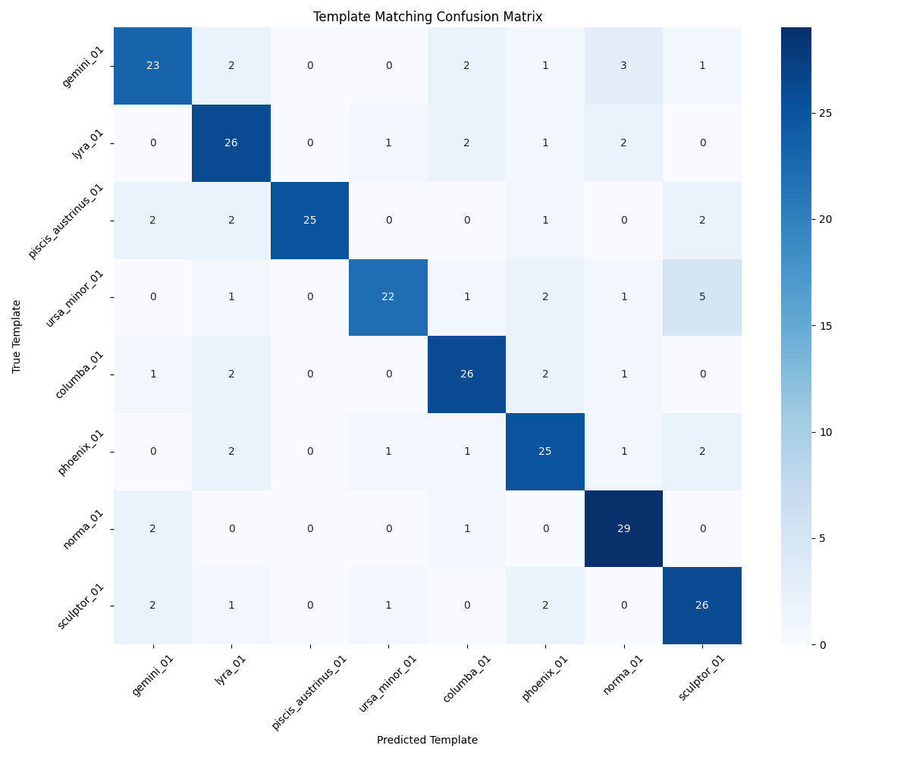

| Component | Status |
|---|---|
| Dataset Collection | Yes |
| Dataset Augmentation | Yes |
| Implementation of a template matching system | Yes |
| Good evaluation of the template-matching system | Yes |
| Investigation of deep learning approaches | Yes |
| High Quality Report | Yes |
For the collection of original screenshots of constellations, the following considerations were addressed:
The method adopted for this project is as follows:
Eight constellations were randomly selected to be included in the dataset, as this was the minimum amount required for the project. Including more constellations would not affect the accuracy of either the template matching system or a deep learning approach, were it to be implemented.
The eight constellations selected were:
Only one original image per constellation was taken for this project. This may seem like a small amount; however, for the purposes of this project, it seemed justified. The justifications for this decision are as follows:
To summarize, increasing the number of original/template images would have boosted the overall size of the dataset, benefiting a deep learning approach to this classification problem. On the other hand, it would not have affected the experiments designed to test the template matching system's implementation; rather, it could have made interpreting the results more difficult.
The data was gathered from the following link.
An example image is shown below:
For each individual image, each augmentation was applied at three levels (mild, medium, and aggressive). This approach was chosen due to the nature of the experiments designed to test the template matching system, more on this later.
The augmentation techniques were implemented using the packages OpenCV and scikit-image.
The augmentations selected are as follows:
The specifics for each of the augmentations are as follows:
| Augmentation Type | Level 1 (Mild) | Level 2 (Medium) | Level 3 (Aggressive) |
|---|---|---|---|
| Contrast | 1.05x increase | 1.5x increase | 2.0x increase |
| Brightness | +10 intensity | +50 intensity | +70 intensity |
| Gaussian Noise | 0.001 variance | 0.01 variance | 0.03 variance |
| Blur | 7x7 kernel, σ=0.5 | 11x11 kernel, σ=0 | 21x21 kernel, σ=0 |
| Rotation | 2° | 5° | 30° |
| Shift | 2% of image size | 5% of image size | 10% of image size |
| Color Jet | 10% blend | 60% blend | 90% blend |
In addition to applying each individual augmentation at each level for every image, all images were augmented 10 further times. For each of these new images, three random augmentation techniques at a random level each were applied.
Thus, in total, each constellation ends up with 31 augmented versions of itself, for a total dataset size of 8 original images and 248 augmented ones.
| Category | Count |
|---|---|
| Constellations | 8 |
| Original Images | 8 (1 per constellation) |
| Individual Augmentations | 168 (21 per constellation) |
| Multiple Augmentations | 80 (10 per constellation) |
| Total Dataset Size | 256 images |
The template matching system was implemented using OpenCV's template matching functionality, specifically utilizing normalized cross-correlation as the matching metric. The core system consists of two main components:
The system computes similarity between images using normalized cross-correlation (cv2.TM_CCOEFF_NORMED), which provides several advantages:
The core similarity computation is implemented as follows:
def compute_similarity(image: np.ndarray, template: np.ndarray) -> float:
"""
Compute normalized cross-correlation between image and template
"""
# Ensure both images are the same size
if image.shape != template.shape:
template = cv2.resize(template, (image.shape[1], image.shape[0]))
# Compute normalized cross-correlation
result = cv2.matchTemplate(image, template, cv2.TM_CCOEFF_NORMED)
return np.max(result)
The matching process follows these steps:
Images are converted to grayscale because constellation patterns primarily rely on structural information rather than color. This approach offers several benefits:
This approach allows for reliable constellation identification even when images have undergone various transformations, though its effectiveness varies depending on the severity of the augmentations applied.
The similarity scores have the following interpretation:
The following two experiments were conducted:
Since template matching simply tries to match the template/original image to one of the augmented images, it is intriguing to investigate the effect that each individual augmentation has on the template matching system.
Investigating this effect was done as follows:
Only images with individual augmentations were used in this experiment.
It was hypothesized that the threshold value selected would have a significant result on which augmentations would cause a classification to occur.
The result plots of this experiment are displayed at the end of this section.
The results of the first experiment showed that no matter what the threshold value was set to, with individual augmentations, the template matching system either classified correctly or missed a classification (no false positives). This can be observed as the precision for each augmentation at any threshold is either 1 or 0.
The augmentations that were affected by threshold levels were rather interesting. The following phenomena were observed:
These observations indicate the following:


It is important to preface the following section by reinforcing the fact that the images the model was tested over were all augmentations of the originals/templates. Adding new images to this experiment would be a waste of time due to the underlying nature of how a template matching system works.
The experiment aims to investigate the overall performance of the template matching system as an image classifier for the constellations in the dataset created.
It was carried out as follows:
Steps 1 through 5 were performed on all images in the dataset, while step 5 was only performed on images with multiple augmentations.
The observation in the first experiment that the threshold was the largest cause for a match or not was the reason to enact this experiment and ditch the threshold entirely. Here we always assume that a constellation is in an image and match it to the best fit.
Below is the confusion matrix:

Since in this experiment an image is always classified as something, the false positive and false negative count end up being identical (54). Thus, the precision, recall, and f1 score are all identical (0.789).
On observing the confusion matrix, we note that the most confusing constellations, with the highest FP/FN count, are Gemini and Ursa Minor. Gemini was confused with almost all the other constellations, while Ursa Minor was mostly confused with Sculptor.
The possible explanations for these observations are as follows:

Ursa Minor:

Sculptor:

Another interesting observation is found when analyzing the average similarity for images with multiple augmentations grouped by the constellation featured.

The average similarity score for these images was almost always lower than the lowest threshold used in the first experiment.
It is also interesting to note that the average similarity for the augmented images of Norma was significantly lower than the other constellations.
Below is a table containing the count for each randomly selected augmenting technique for Norma:
| Technique | Level 1 | Level 2 | Level 3 | Total |
|---|---|---|---|---|
| Contrast | 1 | 3 | 3 | 7 |
| Brightness | 1 | 1 | 2 | |
| Gaussian Noise | 1 | 1 | 1 | 3 |
| Blur | 2 | 2 | ||
| Rotation | 4 | 1 | 2 | 7 |
| Shift | 2 | 4 | 6 | |
| Color Jet | 3 | 1 | 4 |
It was noted that almost all images contained one of either shift or rotation, the two most consequential augmentations to the template matching system.
The above observation provides a potential explanation for the significantly lower average similarity.
Strengths:
Limitations:
In recent years, deep learning techniques have gained prominence in image classification tasks due to their ability to learn complex patterns from data. Constellation classification, which involves identifying star patterns from astronomical images, poses unique challenges such as varying star intensities, noise, and rotation invariance. Unlike traditional template-matching methods, which rely on predefined patterns, deep learning approaches leverage large datasets to automatically extract and learn features that are optimal for the task. This section explores existing literature on the application of deep learning techniques for classifying constellations and similar astronomical patterns.
Deep learning, particularly convolutional neural networks (CNNs), has demonstrated success in a variety of astronomical applications, including galaxy morphology classification, star identification, and transient detection [1]. CNNs are well-suited for image-based tasks due to their ability to capture spatial hierarchies of features through convolutional layers. In the context of constellations, a CNN can identify patterns of stars by learning relationships between pixel intensities, spatial arrangements, and rotational invariances.
Various studies have highlighted the efficacy of CNNs in astronomical tasks. For instance, Dieleman et al. [2] utilized CNNs to classify galaxy morphologies in the Galaxy Zoo dataset, achieving significantly better performance than traditional machine learning techniques. Similarly, Sánchez et al. [3] demonstrated the use of deep learning for star cluster classification, highlighting the model’s robustness to noise and variability in input data.
Although constellation classification has not been extensively studied with deep learning, related works provide valuable insights. Murtagh et al. [4] explored the use of neural networks for star pattern recognition, emphasizing the importance of preprocessing techniques such as brightness normalization and star extraction. More recently, Wang et al. [5] applied CNNs for astrometric tasks, demonstrating that data augmentation—such as rotations, translations, and scaling—significantly improves model performance on astronomical datasets.
Constellations pose specific challenges, such as the sparsity of stars in an image and the presence of background noise from celestial objects. To address these challenges, researchers have employed techniques like attention mechanisms, which allow models to focus on relevant regions of the image [6]. Attention-based CNNs, for example, can isolate star patterns from surrounding noise, improving classification accuracy.
A deep learning approach to constellation classification offers the flexibility to classify a larger variety of constellations than traditional template-matching methods. To maximize this capability, the following strategies are proposed:
Increased Number of Constellations: With the scalability of deep learning models, the number of constellations can be increased as needed. For example, the dataset could include 40 constellations, significantly expanding the scope compared to the original eight constellations used in the template matching system. This variety enables the model to generalize across a broader range of patterns.
Diverse Image Sources: Images should be collected from multiple sources to ensure diversity in observation conditions. Real-world images and screenshots can be gathered from resources like:
These sources provide a mix of realistic star maps and synthetic representations, which can mimic various viewing conditions such as brightness, atmospheric effects, and celestial orientations.
Complex Images: Unlike the template matching dataset, where images contained a single constellation, the deep learning dataset can include images with multiple constellations. This complexity reflects real-world conditions and challenges the model to accurately detect and classify constellations within the same field of view.
Bounding Box Annotations: Each constellation within an image should be marked with bounding boxes, enabling the model to perform both detection and classification. Annotation tools like LabelImg or Roboflow can be used to create these bounding boxes, ensuring the dataset is properly labeled for training object detection models.
To enhance the robustness and variability of the dataset, a comprehensive augmentation strategy is essential. The following points outline the augmentation process:
The dataset should be divided into subsets to support deep learning training and hyperparameter tuning:
This split ensures that the model is trained and validated on separate data, reducing the risk of overfitting and providing a reliable estimate of its performance.
By incorporating a larger number of constellations, diverse image sources, complex multi-constellation images, bounding box annotations, extensive augmentation, and appropriate dataset splitting, this approach ensures that the dataset is well-suited for training a deep learning model. These improvements address the limitations of the template-matching dataset and provide a solid foundation for achieving high accuracy and robustness in constellation classification.
The selection of an appropriate model architecture is crucial for the success of a deep learning-based constellation classification system. Given the complexity of astronomical images and the need for both detection and classification of constellations, a convolutional neural network (CNN)-based model is recommended due to its proven efficacy in image-based tasks [7]. This section discusses the choice of model architecture, the use of pre-trained models, and training considerations for this project.
Base Architecture:
Pre-trained Models:
Object Detection Framework:
Fine-tuning:
Loss Functions:
Optimization and Hyperparameters:
The performance of the model will be evaluated using the following metrics:
Classification Metrics:
Detection Metrics:
Robustness Testing:
Hardware Requirements:
Training Time:
By leveraging pre-trained architectures, fine-tuning strategies, and a robust object detection framework, this approach balances accuracy, efficiency, and scalability. The combination of CNN-based feature extraction, bounding box regression, and extensive evaluation ensures the proposed model is well-suited for the task of constellation classification.
[1] Y. LeCun, Y. Bengio, and G. Hinton, “Deep learning,” Nature, vol. 521, no. 7553, pp. 436–444, May 2015.
[2] S. Dieleman, J. Willett, and J. Dambre, “Rotation-invariant convolutional neural networks for galaxy morphology prediction,” Monthly Notices of the Royal Astronomical Society, vol. 450, no. 2, pp. 1441–1459, Jun. 2015.
[3] E. Sánchez, A. Díaz, and C. Ruiz, “Deep learning for star cluster classification: A case study,” Astronomy & Computing, vol. 34, p. 100401, Dec. 2020.
[4] F. Murtagh et al., “Neural networks for star pattern recognition,” Astrophysics and Space Science, vol. 139, no. 1, pp. 123–135, Sep. 1987.
[5] Q. Wang et al., “Astrometric tasks with convolutional neural networks,” Astronomy & Astrophysics, vol. 650, p. A117, Jun. 2021.
[6] A. Vaswani et al., “Attention is all you need,” in Proc. Advances in Neural Information Processing Systems (NeurIPS), Long Beach, CA, USA, 2017.
[7] A. Bochkovskiy, C.-Y. Wang, and H.-Y. M. Liao, “YOLOv4: Optimal speed and accuracy of object detection,” arXiv preprint arXiv:2004.10934, Apr. 2020.
[8] T.-Y. Lin et al., “Focal loss for dense object detection,” in Proc. IEEE ICCV, 2017, pp. 2980–2988.
[9] R. Girshick, “Fast R-CNN,” in Proc. IEEE ICCV, 2015, pp. 1440–1448.
[10] D. P. Kingma and J. Ba, “Adam: A method for stochastic optimization,” in Proc. ICLR, 2015.
[11] J. Deng et al., “ImageNet: A large-scale hierarchical image database,” in Proc. IEEE CVPR, 2009, pp. 248–255.
[12] S. Ren, K. He, R. Girshick, and J. Sun, “Faster R-CNN: Towards real-time object detection with region proposal networks,” IEEE Trans. on PAMI, vol. 39, no. 6, pp. 1137–1149, Jun. 2017.
[13] Y. LeCun, Y. Bengio, and G. Hinton, “Deep learning,” Nature, vol. 521, no. 7553, pp. 436–444, May 2015.
[14] A. Krizhevsky, I. Sutskever, and G. H. Hinton, “ImageNet classification with deep convolutional neural networks,” Communications of the ACM, vol. 60, no. 6, pp. 84–90, Jun. 2017.
[15] K. He, X. Zhang, S. Ren, and J. Sun, “Deep residual learning for image recognition,” in Proc. IEEE CVPR, 2016, pp. 770–778.
[16] M. Tan and Q. Le, “EfficientNet: Rethinking model scaling for convolutional neural networks,” in Proc. ICML, 2019, pp. 6105–6114.
Two different AI language models were used during the development of this project:
These models were selected to provide complementary perspectives and cross-reference ideas, particularly when discussing technical concepts and methodological approaches. Using multiple AI models helped ensure a more comprehensive and balanced analysis.
The use of AI models as research tools raises questions about research methodology and reproducibility. While AI models can enhance research efficiency, their outputs may vary across different iterations or model versions. This project addressed these concerns by:
AI language models inherently carry biases from their training data and architectures (Bender et al., 2021). To mitigate these potential biases, this research:
The integration of AI tools in academic work necessitates careful consideration of academic integrity principles. This research adhered to the following framework:
While this project primarily utilized public astronomical data, the broader implications of AI usage in research contexts raise important privacy considerations. The research methodology ensured:
Throughout the project the development tool cursor was used. This facilitated the use of generative AI directly within the the IDE. Generative AI was mostly used as either a search engine replacement, or a debugging tool throughout both the development and research phases.
Here are some example prompts:
Prompt: "there are two types of templating as far as i know,"
Response: "In computer vision, there are indeed two main types of template matching:
def feature_based_matching(image, template):
sift = cv2.SIFT_create()
kp1, des1 = sift.detectAndCompute(template, None)
kp2, des2 = sift.detectAndCompute(image, None)
# Match features
bf = cv2.BFMatcher()
matches = bf.knnMatch(des1, des2, k=2)
def match_template(image: np.ndarray, template: np.ndarray, threshold: float = 0.7):
# ...
methods = [cv2.TM_CCOEFF_NORMED, cv2.TM_CCORR_NORMED]
for method in methods:
result = cv2.matchTemplate(image, template, method)
Uses direct pixel intensity comparisons
Slides template over image and compares pixel values
Less robust to transformations
Faster and simpler
Better for exact matches in controlled environments
Your code uses pixel-based matching with cv2.matchTemplate(). Given the nature of constellation matching, you might get better results switching to feature-based matching since it handles rotations and scaling better. Would you like me to show how to implement that approach? "
Another example is when debugging and error in the initial template matching imlementation:
Prompt: "no images are being processed, help me figure out why @Codebase"
Response: "Let me help you debug why no images are being processed. Looking at the code, there are a few potential issues to check:
input_dir = Path("data/original")
if not input_dir.exists():
raise FileNotFoundError(f"Input directory '{input_dir}' does not exist")
Make sure:
for image_path in input_dir.glob("*.jpg"):
If your images are in a different format (like .png), they won't be processed.
Here's how you can verify and fix these issues:
from pathlib import Path
input_dir = Path("data/original")
print(f"Input directory exists: {input_dir.exists()}")
print(f"Input directory contents: {list(input_dir.glob('*'))}")
# Replace line 105 with:
for image_path in input_dir.glob("*.[jJ][pP][gG]", "*.[pP][nN][gG]", "*.[jJ][pP][eE][gG]"):
# Add after line 100:
print(f"Looking for images in: {input_dir.absolute()}")
image_files = list(input_dir.glob("*.jpg"))
print(f"Found {len(image_files)} images")
Common issues to check:
Make sure you're running the script from the correct directory
Verify image file permissions
Confirm image files are not corrupted
Check if the images have the correct extension (case-sensitive)
Let me know what you find after adding these debugging steps, and we can further diagnose the issue."
Finally during the report writing process generative AI was leveraged to find papers to research for the literature review as well as a grammar checker and proof reader.
Prompt: "Proof read my report, outlining any improvements and suggestions youde have, keep in mind this is in academic format and i am using ieee referencing style:"
Response: "I'll review your report and provide suggestions for improvement. Here's my analysis:
Strengths
Well-structured with clear sections and subsystems
Good use of tables and figures to illustrate points
Detailed technical explanations
Strong methodology descriptions
Comprehensive deep learning investigation section
Areas for Improvement
[1] A. B. Author, "Title of paper," Journal Name, vol. x, no. y, pp. xxx-yyy, Month Year.
Would you like me to elaborate on any of these points or provide specific examples of suggested revisions?"
In this project AI helped formulate a clear understanding of the limitations and strengths of a template matching system, allowing a clear plan for dataset collection and experiment analysis to be formed before writing any code.
When asking AI to help write code, more often than not it would break the system as it would not have an idea of the larger picture.
It also contributed heavily in the decision making an research section behind the deep learning investigation.
Generative AI overall made me more efficient. It stream lined my learning and research process while also providing me clear explanations of concepts I was unclear of. While overall it made me more efficient, when I tried to cut corners and have it debug my code or write my code for me it just set me back.
My perspective didn't change much throughout this project, I will still continue to use AI in my research, but will not be moving to code generation full time with AI.